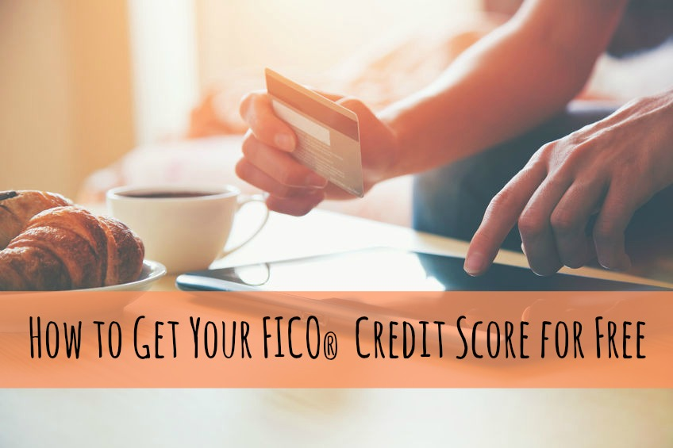

 home Log in Home About us Learn Careers Help Log in Sign up Log in
0
NEW: Dark web monitoring, for free, forever. Try ClearScore Protect
Your credit score and report, for free, forever.
Join 12 million others taking control of their finances.
Your credit score and report, for free, forever.
Join 12 million others taking control of their finances.
A better score means better deals
Your credit score is a 3-digit snapshot of your financial history. Find a wide range of offers tailored to your score in the ClearScore marketplace.
A better score means better deals
Your credit score is a 3-digit snapshot of your financial history. Find a wide range of offers tailored to your score in the ClearScore marketplace.
Check my scoreYour credit score is
0
out of 700
NEWFree dark web monitoring
Check your credit report for signs of fraud and see if your passwords have been stolen with dark web monitoring. For free, forever.
Free dark web monitoring
Check your credit report for signs of fraud and see if your passwords have been stolen with dark web monitoring. For free, forever.
See my stolen passwords Learn moreFind credit cards and loans for you
We partner with over 90 trusted lenders to bring you great deals on credit cards, loans and more. See how likely you are to be accepted before you apply.
Find credit cards and loans for you
We partner with over 90 trusted lenders to bring you great deals on credit cards, loans and more. See how likely you are to be accepted before you apply.
See my personalised offersFind credit cards and loans for you
Credit Cards
Loans
Car Finance
Energy
Mortgages
Car Insurance
Offers
What are you interested in?
Credit Cards
Loans
Car Finance
Energy
Mortgages
Car Insurance
Track your finances in your credit report
See what lenders see when you apply for credit in your monthly credit report. Checking it could prevent any nasty surprises and help you spot fraud before it’s too late.
Track your finances in your credit report
See what lenders see when you apply for credit in your monthly credit report. Checking it could prevent any nasty surprises and help you spot fraud before it’s too late.
Track my report 479 4790
Your credit score and report, for free, forever.
A better score means better deals
Free dark web monitoring
NEWFind credit cards and loans for you
Track your finances in your credit report
Discover moreHand crafted with ♥ in London
Registered in England and Wales
Company number 09221862
ICO ZA100119
VAT registration number 255 8953 58
Authorised and Regulated by the Financial Conduct Authority (FRN: 654446)
ADDRESS
47 Durham Street
London, SE11 5JA, UK
DISCOVER
Sign up for free Log in About us Careers Learn Protect Get in touch HelpSOCIAL
Facebook Twitter YouTube LinkedIn Privacy and Cookie Policy Terms and Conditions Anti Modern Slavery Statement© ClearScore Technology Ltd. All Rights Reserved.